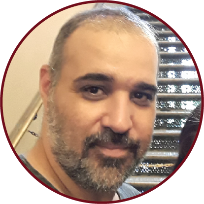

|  | Sobre mim |
|---|---|
| Profissional com mais de 10 anos de experiência em tecnologia atuando em diferentes áreas de TI como infraestrutura, serviços, governança, processos, desenvolvimento e consultoria. Considero minhas principais competências liderar e desenvolver pessoas. Proatividade, empreendedorismo e bom relacionamento interpessoal sustentam essas competências. Estou habilitado a assumir responsabilidades de Gestão de Serviços de TI (Outsourcing, Governança, Desenvolvimento, Sustentação/Suporte e Consultoria).
Meu objetivo é trabalhar em empresas inovadoras que prezam e zelam pela gestão do capital intelectual. Meu foco é empreender, alavancar negócios e construir histórias de sucesso em ambientes que proporcionem novos desafios e que gerem conhecimento contínuo. Sou também Co-fundador do estúdio Oficina de Games, onde atuo como Produtor e Game Designer de jogos digitais. |
|
| Habilidades | |
| Game Design | Capacidade para criar e planejar os elementos, regras e dinâmicas de um jogo. |
| Roteiro de Games | Facilidade para criar histórias e mundos enxergando a experiência do jogador como um todo |
| Trabalho em Equipe | Bom relacionamento interpessoal, conseguindo enxergar os obstáculos e dificuldades de cada membro da euipe, buscando sempre uma comunicação mais limpa e direta. |
| Raciocínio Lógico | Capaz de enfrentar situações e problemas através de análises lógicas |